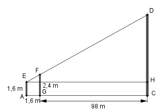

Aufgabe 102 Die Höhe eines Turmes wird über die Spitzen zweier Stäbe von 1,6 m und 2,4 m, die 1,6 m auseinanderstehen, angepeilt. Wie hoch ist der Turm, wenn der längere Stab 98 m entfernt steht? FG||CD.  Strahlensatz: HD AC --------- = ---- |*(FG - EA) FG - EA AG AC * (FG - EA) HD = ---------------- AG AC = 98 m + 1,6 m = 99,6 m FG - EA = 2,4 m - 1,6 m = 0,8 m 99,6 m * 0,8 m HD = ------------------ = 49,8 m 2 CD = HD + CH = 1,6 m = 49,8 m + 1,6 m = 51,4 m oder HD : (FG - EA) = AC : AG Inneres Produkt = äußeres Produkt AC * (FG - EA) = HD * AG |:AG AC * (FG - EA) HD = ----------------- AG 99,6 m * 0,8 m HD = ------------------ = 49,8 m 2 CD = HD + CH = 1,6 m = 49,8 m + 1,6 m = 51,4 m